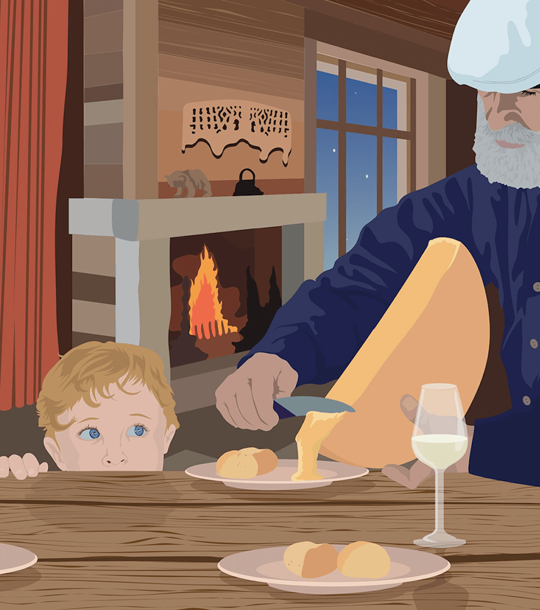

La Raclette deja un olor a queso tremendo en toda la casa.
Raclette ( /rəˈklɛt/, pronunciación en francés: /ʁaklɛt/) es un plato suizo, también muy popular en Saboya, Francia, que se basa en calentar queso sobre una plancha y luego retirarlo (rascarlo), una vez se ha derretido.

Raclette ( /rəˈklɛt/, pronunciación en francés: /ʁaklɛt/) es un plato suizo, también muy popular en Saboya, Francia, que se basa en calentar queso sobre una plancha y luego retirarlo (rascarlo), una vez se ha derretido.
---